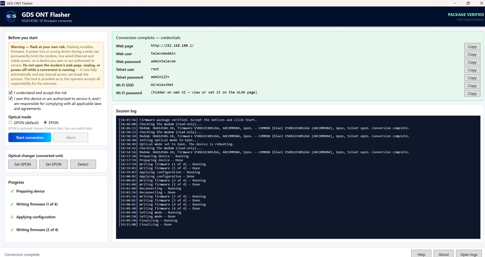

Conversion complete — progress stages at session log (device access details naka-mask)
GDS ONT Flasher
A guided Windows service utility designed for supported Huawei HG8145X6-10 units. It automates the validated service workflow for supported R022/R024 firmware variants, with pre-flight checks, conversion status monitoring, and GPON ↔ EPON mode switching. ₱3,499 one-time · 1 PC per license key · No monthly subscription. Intended only for hardware you own or are authorized to configure, repair, or service.
Ano ang kasama
- Guided one-click conversion workflow — pre-flight checks bago magsimula, tapos hakbang-hakbang na status habang tumatakbo
- Supported unit: Huawei HG8145X6-10 — validated sa R022 at R024 firmware variants sa totoong hardware
- Built-in pre-flight checks — tinitingnan muna ang model at firmware variant; hindi magpapatuloy kapag hindi supported
- Conversion progress monitoring — live na listahan ng bawat hakbang at session log
- GPON ↔ EPON mode switching — reversible optical changer para sa converted unit
- Package integrity verification — sine-check ang package bago ang bawat run
- Ipinapakita ang device access details pagkatapos ng conversion (web, telnet, at Wi-Fi SSID)
- Single .exe na may in-app na Help; online license activation, 1 PC kada key, may 14-araw na offline grace
Detalye
| Presyo | ₱3,499 one-time kada PC — lifetime, walang buwanan |
|---|---|
| License | 1 PC kada key, online activation, habambuhay |
| Sinusuportahang unit | Huawei HG8145X6-10 (stock R022 at R024) |
| Operating system | Windows 10 / 11, 64-bit |
| Format ng bigay | Single .exe (~170 MB) — download link + license key |
| Optical | GPON ↔ EPON, reversible |
| Delivery | Download link + key via email o Messenger pagka-verify ng bayad |
Kailangan mo
- Windows 10 o 11 (64-bit) na PC o laptop
- LAN cable papuntang ONT — hindi pwedeng WiFi lang ang koneksyon
- ONT na pag-aari mo o may pahintulot ka nang i-service
- Internet sa PC para sa isang beses na license activation
GDS ONT Flasher is intended for qualified users servicing supported hardware they own or are authorized to service.
Compatibility is limited to specifically tested models and firmware variants. Firmware modification carries inherent risk and results may vary depending on hardware and firmware condition.
GDS Digital Solutions is not affiliated with or endorsed by Huawei or any internet service provider. Product and company names referenced for compatibility purposes remain the property of their respective owners.
Buong proseso ng order at bayad
Para hindi ka na umalis ng page — ganito ang mangyayari mula sa pag-click ng "Umorder" hanggang sa matanggap mo ang binili mo.
- Order form. Pangalan, email o Messenger, at paraan ng bayad. Wala kaming hinihinging password, OTP, o card details.
- Order reference. Pagka-submit, makukuha mo ang reference mo (hal. GDS-2608-0042). Ito ang gagamitin mo sa pagbabayad at sa pag-track.
- Bayad. Ipapakita ang eksaktong halaga at ang GCash o bank details. Ilagay ang reference sa notes o message ng bayad para agad namin ito matukoy.
- Proof of payment. I-upload ang screenshot ng resibo sa page mismo. Nakikita namin ito kasabay ng order mo.
- Verification at delivery. Pagka-verify ng bayad, ipapadala namin ang download link at license key via email o Messenger. Karaniwang ilang oras lang.
Madalas itanong tungkol dito
Anong unit ang sinusuportahan?
Huawei HG8145X6-10 na naka-stock firmware (R022 o R024) — parehong na-validate sa totoong hardware. Kung iba ang unit o firmware mo, message mo muna ako bago bumili at itsetsek ko kung kaya.
Paano kung ma-brick ang unit?
May pre-flight checks ang app na hindi magpapatuloy kapag hindi supported ang unit o firmware variant, at may safety gates sa bawat hakbang. Pero ang pagbabago ng firmware ay laging may kaakibat na panganib, at maaaring mag-iba ang resulta depende sa kondisyon ng hardware at firmware — hindi kami makakapangako ng 100% recovery sa lahat ng kaso. Basahin mo ang in-app na Help bago magsimula, at kung may aberya, message mo kami at tutulungan ka namin hangga't kaya.
Ilang PC ang pwede kong gamitan?
Isang PC kada license (online activation). Kung papalit ka ng PC o mag-format, message mo lang ako para i-transfer ang activation mo sa bagong makina — libre iyon.
Kailangan ba ng internet?
Sa PC, oo — isang beses para sa license activation, tapos may 14-araw na offline grace kaya kaya mong gamitin kahit walang internet paminsan-minsan. Ang koneksyon sa ONT mismo ay via LAN cable, hindi internet.
Kasama ba ang firmware files?
Kumpleto ang package — walang hiwalay na ida-download o hahanapin. May package integrity verification na sine-check ang package bago magsimula ang bawat run.
Pwede bang gawing GPON o EPON?
Oo. May optical changer na kayang mag-set ng GPON o EPON, at reversible ito — pabalik-balik anumang oras.